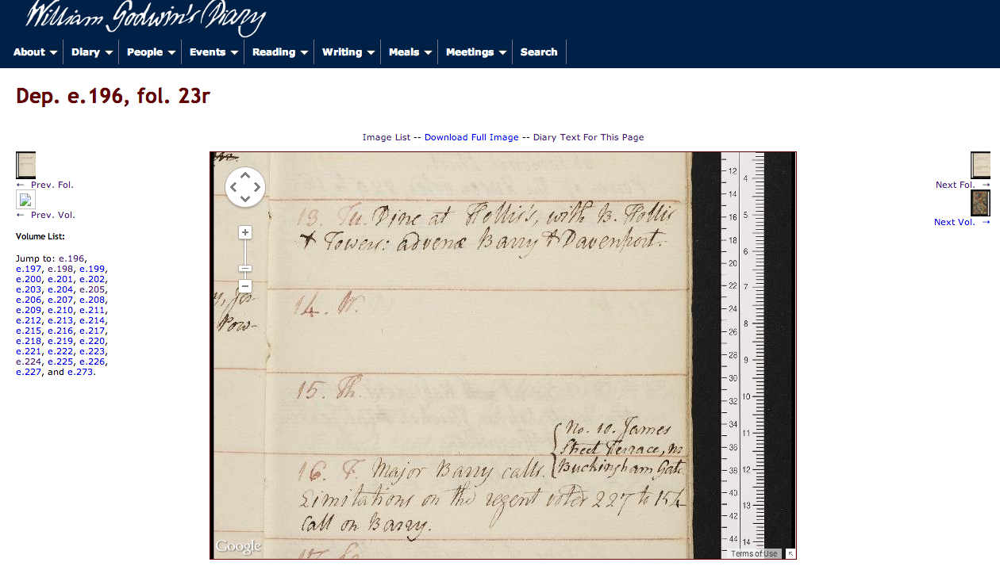
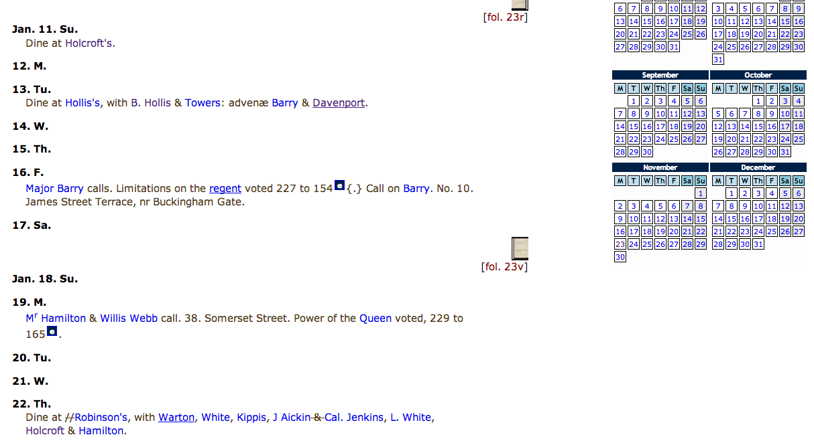
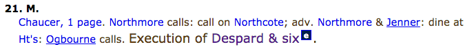
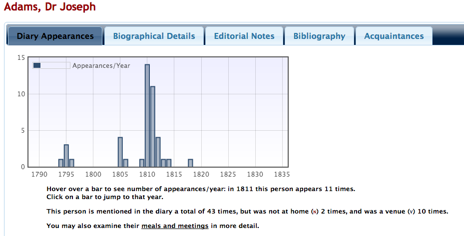
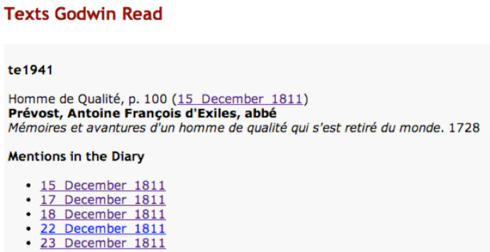

The Diary of William Godwin
Table of Contents
Abstract
William Godwin’s diary presents a range of difficulties to both researchers and editors. Compiled over a forty-eight year period, Godwin manages to record a tremendous amount of detail in the fewest possible words. This edition – the first time the diary text has been published – takes advantage of the digital medium to give researchers new ways to synthesise Godwin’s terse and codified records into coherent forms. The edition also includes vast amounts of secondary material, particularly a wealth of biographic information. At the same time, the lack of documentation and explicitly stated editorial methodology makes classification difficult: William Godwin’s Diary is an excellent historical resource that successfully exploits the digital medium, but falls short of meeting the criteria of a Scholarly Digital Edition as a work of textual scholarship.
Introduction

The diaries, consisting of thirty-two notebooks, form one of three key pieces of the Abinger Collection1, which has been housed in the Bodleian Library in Oxford since 1974, and was purchased outright in 2004. The detail with which Godwin records his daily activities has made the diaries an invaluable resource for literary scholars and historians. His chronicling of his reading and writing has allowed scholars to trace the production of, and influences behind, some of Godwin’s most important work, including his major philosophical treatise, Enquiry Concerning Political Justice. At the same time, Godwin’s meetings and presence at social events with leading figures of the day gives historians a wealth of information from which to reconstruct the vibrant political, literary and theatrical circles of late-18th and early-19th century London.
The William Godwin’s Diary project began in 2007. The majority of the editorial work was undertaken at the University of Oxford within the Department of Politics and International Relations, and under the directorship of David O’Shaughnessy and Mark Philp. This edition marks the first time that the diary text has been published in full in any format: it provides an edited and fully-searchable transcription of all thirty-two volumes, in addition to page facsimiles. The project also positions the diary as a framework for an exhaustive degree of historical and prosopographical research, identifying and mapping thousands of the people and events to which Godwin refers. While undoubtedly a substantial achievement, William Godwin’s Diary nevertheless exhibits signs of an unresolved tension between the project as a work of textual scholarship and the presentation of the diary as the locus of a wealth of secondary historical data.
Godwin’s Diary and Digital Possibilities
Godwin’s diary is a challenging set of manuscripts to read. This is not due to any particular textual difficulties, but simply because of its sparseness: though filling thirty-two notebooks, the diaries, compiled over forty-eight years, provide minimal information for any given day. The terse, codified, manner in which Godwin records his daily activity makes interpretation of events in and of themselves very difficult. Entries are typically in the form: ‘Call on X’; ‘Y dines’; ‘theatre, [name of play]’; ‘write 3 pages’ – that is, as a series of activities and named entities. Godwin also uses a range of abbreviations (‘nah’ for ‘not at home’) and brief or contracted French terms (‘cala’ for ‘browsing through a text “ça et la”’).
Unlike other diarists, for instance Samuel Pepys, Godwin’s diary serves less as the writer’s mode of reflection upon events; rather, they are very much chronicles, in the most precise sense: the recording of events in chronological order, without any attempts at interpretation.
This is not to suggest that there is nothing open to interpretation at a close textual level: even within this formalistic mode of expression, Godwin’s use of abbreviations for close acquaintances, and the suggestions of intimacy through increasing use of ‘elle’, ‘diner chez elle/chez moi’ when referring to Mary Wollstonecraft, are informative. Moreover, the style of diary in general is indicative of Godwin’s meticulous habits (by the same token, a failure to record a significant event would be equally revelatory). There are also signs, at a textual level, of the composition of the diary: though completed daily, there is some evidence that Godwin copied entries from elsewhere (Cummings 2008, 3), or retrospectively inserted a record of an external event he considered significant (the Battle of Waterloo is noted, using different ink, on 18th June 1815, the day of the battle. Godwin, in London, cannot possibly have heard about it so quickly).
Beyond this, though, the diary is more apt to forms of what might be termed ‘synthetic reading’, for which the digital medium and digital processes are ideally suited. A digital edition has the potential to expose to the researcher the various levels ‘beyond’ the text itself: the diary as a macroscopic view of Godwin’s life, as a chronicle of the genesis of his literary work, and as the recorded traces of a complex social network.
As an example of the first, the significance – as an isolated incident – of Godwin having seen ‘Adams’, a physician, is difficult to determine (at least, without Godwin giving any further details); that Godwin saw Adams as often as fourteen times a year between 1810 and 1815, but seldom afterwards, gives a far broader ground for investigation. Though scholars are able to identify such trends, this work is essentially computational and can be greatly facilitated in a digital edition. Moreover, more long-term ‘latent’ trends may be exposed: as a hypothetical example, the number of times Godwin dined out, presented as a rolling average, could be highly indicative.
A digital, linked-data approach may aid the understanding of Godwin’s philosophical and literary work, mapping their creation both in time and in relation to his reading. The same links can be drawn with Godwin’s letters (volume one of a scholarly edition by Pamela Clemit was published in print in 2011). Mapping his literary creation in time is essentially a chronological synthesis, as described above. Linking the record of a work’s creation to a section of the work itself is more ambitious – not least as it would require digital editions of those works.
Finally, the diary invites a prosopographical approach to study. The diary can be seen as the central locus in a network of named entities and activities; or, rather, a representation of Godwin’s perspective upon this complex network. A precondition for using a digital approach to represent this network is the identification, and normalisation, of these named entities. The edition must also provide a suitable interface for exploring this network.
Aims, Parameters and Transparency of the Edition
As noted in the introduction, the principle aim of William Godwin’s Diary appears to be the creation of a historical and prosopographical resource. It seems natural, therefore, that the main effort of the project was focused on creating a historical apparatus to ‘clarify Godwin’s entries and providing additional information’ (Myers, O’Shaughnessy, and Philp 2010) – specifically, in the identification of ‘named entities’ (people, places, events) within the diary text and provision of secondary sources. As a historical resource, the project is well documented: there is a clearly stated rationale behind the interpretation and encoding of Godwin’s abbreviations, and his recording of events, writing, people and places.
As an edition of the document (or document-text), however, the absence of explicitly stated editorial methodology is problematic. Though otherwise comprehensive, the ‘Editorial team and acknowledgements’-page is notably taciturn with respect to the text of the edition, noting only that Beth Lau ‘played a critical role in initiating and directing the transcription of the diary before this project began’. How the transcriptions were made, by whom, and, most importantly, according to what procedures is not documented. What implicit decisions were taken in this textual transfer from manuscript page to digital form? This is not to cast doubt on the accuracy of the transcribed text per se, but rather to recognise, as Pierazzo does, that transcription can never be an objective activity (Pierazzo 2011, 474). Without an understanding of the rationale behind the subjective decisions made in transcribing, a reader cannot automatically assume a correspondence between a given feature of the document text and the text of the edition. Of course, a user is able to refer to the facsimile, but the requirement to do this (in effect, to reverse-engineer the editorial methodology) is clearly an impediment to the usefulness of the edition.
In this respect, William Godwin’s Diary falls short of satisfying the RIDE criterion that a Scholarly Digital Edition ‘justifies […] the editorial method adopted and [clearly describes] of the rules that guided the edition’ (Sahle and Vogeler 2014).
Content of the Edition
Selection of documents
The selection of documents is mostly self-evident, consisting, as the introduction states, of thirty two octavo notebooks covering the years 1788–1836.
There remain problems, however. One is the inclusion of the facsimile of MS. Abinger e. 33, according to the Abinger catalogue a supplement to MS. Abinger e. 6, one of the diary notebooks. This manuscript consists of three folios, with 1r containing the title ‘Supplement to Journal / 1793 / Mar. 23’ written in Godwin’s hand. It is unclear whether this should be considered a part of the diary: it is not one of the 32 octavo notebooks; and, as the pages have not been transcribed, presumably it was not considered as such by the editors. The edition does, however, include the so-called ‘1796 list’, included at the end of MS. Abinger e. 7. Godwin ‘compiled the list – probably in 1805 – to map the growth and range of his acquaintance over the years 1773-1805’ (Myers, O’Shaughnessy, and Philp 2010). This list is included in the transcription.
It is not clear why the ‘1796 list’ should be considered part of the diary to the extent that it is transcribed, while the ‘Supplement’ is not: neither are diary entries per se. If the rationale is simply that the former is contained within one of the thirty-two notebooks, it calls into question the initial selection criteria (after all, the Abinger Catologue appears to consider the Supplement a part of the diary). While there may be a legitimate rationale behind this – on grounds of relevance, say – it is a subjective decision, and without any statement to this effect there is a risk of it appearing arbitrary.
Editorial methods and document representation



Modelling of data
With a high level of structure (as one would expect from a diary) and the codification of semantic entities, Godwin’s diary may be seen as being closer to discrete data than to linear text. As a work of prosopography, the diary might be encoded along the lines of Bradley’s work on the Prosopography of the Byzantine Empire. This approach advocates the use of relational databases to store textual data that has already been reduced to what Bradley calls ‘factoids’ (indeed, a series of factoids seems an appropriate description of Godwin’s diary). Moreover, according to Cummings, the project was conceived as data-centric:
Unlike those working in History or English, the project members are perhaps more interested in the statistics one can generate from the encoded texts than the textual phenomena present in the diary itself.
That a different approach, namely the use of TEI-XML and an eXist database, was employed instead is indicative of a desire to create, simultaneously, an edition of the document text. Using a relational database requires too great a degree of abstraction and normalisation, from which it is difficult to reconstruct linear text.
The TEI encoding contains a level of structural mark-up – a TEI-headed document for each year of the diary, divided into days with abstract divisions – and, contained within, both text-level mark-up (see above) and prosopographical mark-up of named entities as inline elements. While making mapping and interlinking more difficult compared to a purely relational model, the link between the data and the textual transcription is retained. As previously noted, it is a functional requirement that the structural mark-up be rigidly enforced; also, given the required integrity of named entities, the prosopographical mark-up necessarily supersedes textual features such as deletions. This is a justifiable pragmatic decision, but one which reaffirms the focus of the project on the wider, historical context of Godwin’s life rather than on the document or the text.
Publication and presentation
Technical infrastructure
The site gives some information regarding the technical infrastructure. The XML files are stored and queried using eXist, a native XML database, which enables the kinds of complex queries required for the interlinking of entities, using XQuery syntax. Diary pages, which appear to be simple renderings of the underlying XML, are transformed to HTML using XSLT stylesheets by Apache’s Cocoon. The canonical entity page (people, events) is, I assume, generated from the database using XQuery. Filtering of lists and other data manipulation are carried out on the client side using JavaScript libraries such as JQuery Datatables, producing a snappy interface, and obviating the need for more complex AJAX-based approaches and constant querying of the database. However, this limits the user to either a ‘download all the data and filter’ approach, or searching from scratch with a full database query.
Site interface
The site interface is, for the most part, functional rather than revelatory: whilst obviously a subjective view, it seems that, like a great many scholarly digital editions, the design of the front-end has been given much less consideration than the digitisation of material or the back-end infrastructure. In general, it feels as if the site was designed primarily for the conversion of data: as such, pages appear to be renderings of the structure of the XML documents in HTML, rather than the extraction of this data and its incorporation into a site more focused on user experience.
Presentation interface
The default interface for displaying the diary transcriptions is on a yearly basis: after selecting Diary > Transcription from the dropdown menu, the user is presented with a list of years; clicking one of these links returns all the data for the selected year. Though this view features a useful tool to highlight entity types within the text, having to manually scroll through an entire year is tiresome. Conversely, selecting an instance of an entity (say, a dinner with a particular individual) returns only the entry for the day in question, requiring the user to return to the full-year view for greater contextualisation. These two options appear either too widely spread or too narrowly focused to be particularly useful.
Presenting the diary entries on yearly pages also creates disconnect with the manuscript scans (Godwin filled up notebooks in order, rather than using one notebook per year). Though there are links next to each entry to the document scan, some kind of split-screen view would allow a direct comparison of the edition text with the facsimile.
Browsing, searching and discoverability
A user may select the transcription by year, or select the facsimile by shelf-mark. Within the facsimile view there is a forward-by-folio and forward-by-volume option, giving a sense of place within the diaries. Given the scale of the diaries (and the general difficulties with close-reading such a text), a browsing approach is perhaps not the most useful. It would have been helpful for the ‘catalogue of facsimiles’ page to give the date range covered by a particular volume, or for the list of transcribed years to feature some sort of overview.
The site provides two search-based facilities: a Google engine-based search of the entire site, and a site-based search allowing a query of one or two key words (with and/or options) or whole-phrase matching. The site-based search can also be applied to the additional biographical material (though this is, confusingly, labelled as a search of ‘People’). The lack of facility to filter results (by date ranges, for instance) necessitates reading of all the returned entries. Of course, the results are not ordered by ‘relevance’ in the way that Google does as there is no criterion for determining whether a given entry is more relevant than any other; at the same time, this may not be evident to the user.
Substantially more useful is the ability to explore the diary through the various entities: this has the advantage for the user of being able to filter lists of results rather than having to enter search terms blindly. Thanks to the use of the JQuery Datatables plugin, and all the data being downloaded to the client before filtering, the process is rapid and allows an iterative approach to searching. Re-use of this interface for the main search facility would be a welcome improvement.
Metadata for interlinking and synthesis


Identifiers, Data Extraction and Technical Interfaces
The site is well designed with regard to persistence of identifiers. Each year and day’s entry is given a canonical reference in the XML markup. Identified people are referenced by the URI of their page (which contains biographical information and a list of their appearances in the diary).
While it is possible to download the complete, canonical TEI-XML of the diary transcriptions as a ZIP file, the XML encoding of individual pages of transcription can be downloaded from a link at the bottom of the page. Interestingly, each year is presented as a full TEI document, including the TEI-Header. When downloading the XML for a single day, however, only the wrapping ‘abstract segment’ element is included. As standalone files, these should also, I feel, contain header information describing its contents. Given that the yearly-based full TEI-XML files are an abstraction anyway, artificially including a TEI-header with XSLT should not prove either technically or conceptually difficult.
The site’s technical documentation also mentions the existence of an API for external developers, which was under development at the time of publication (as five years have elapsed since publication, it seems unlikely that it will be completed). The API itself apparently allows developers to submit requests to the database using XQuery. If this were fully realised in a stable way for the long term it would allow external developers to query and present the data in a range of different ways, possibly fulfilling some of the potential hinted at by the current site. Developments in JavaScript libraries could, indeed, allow the functionality of the site – graphical representations and data-mashing, for instance – to be moved to the client side entirely.
Concluding remarks
As a historical resource, William Godwin’s Diary is of great value to researchers: the identification of people referred to in the diary, the inclusion of a wealth of secondary source material, and the provision of the technical apparatus to enable new modes of exploring a very large amount of historical textual data, are immense scholarly achievements. In this respect, the project makes very effective use of digital paradigms and processes.
It is in the desire to include the text of the diary that the tension alluded to in the introduction arises. Indeed, through the historical apparatus and the macro-structures employed for their organisation and presentation, the resource is useful as a research tool even without the text or scans of the diary itself: the formalistic style of the diary means that little information is lost between Godwin’s writing ‘Dine with X’ and a point on a graph representing the dinner.
The impulse to include the text itself is natural enough, though (not least to make it available via the web). As such I think there is sufficient ground to consider William Godwin’s Diary at least a de facto Scholarly Digital Edition. In this respect, as I have argued, it lacks clear documentation concerning textual editorial methodology (as opposed to the historical research). Given the relative absence of textual complexity (a highly codified, neatly written, single-witness manuscript), the editorial decisions made are few and largely common sense. Still, this is not quite enough: if the various schools of scholarly editing have any commonality, it is in their undertaking to articulate the relation between the text of the edition and the text(s) of the source documents. I do not doubt that the transcribers and editors had a clear idea of what they were doing, but they have not documented it in the edition and so the user (and the reviewer) can only retrospectively deduce what that idea might have been. As a Scholarly Digital Edition, William Godwin’s Diary is certainly lacking in this respect.
Nevertheless, the project highlights on-going debates in the field of digital scholarship. In particular: what is a Scholarly Digital Edition when shifting digital paradigms alter the possible modes of representing and analysing a text?
This conflict, I would argue, is central to the tension I have described in William Godwin’s Diary. Fully describing the text with mark-up requires a degree of flexibility (for which, it must be said, TEI is well designed) to capture its inevitably idiosyncratic nature. As we attempt to capture in more detail the text as embodied in its physical medium, or in textual variants between witnesses, the number of idiosyncrasies grows. On the other hand, an analytical approach, such Godwin achieves through abstract representation of people and activities, necessitates a much more formalistic encoding, with regular structures and normalisation. With a text that is already highly formalised, thanks to Godwin’s codified style, Godwin’s Diary seems like low-hanging fruit. More complex documents, with more text, with revisions and material damage, cannot as easily be reduced to such data structures without loss of information. In the latter case, how far can an abstraction of a text (or reduction to data) be taken before it can still be considered representative – an edition – of the source material?
Indeed, it may be argued that William Godwin’s Diary inverts the traditional relationship between the document or text of the scholarly edition and its apparatus: the historical apparatus, exhaustive as it is, and via the modes of its presentation, becomes the ‘text’ of the edition; and the documentary basis of the edition forms a framework, a kind of supporting apparatus. If such a paradigm is to be validated, though, scholarly rigour all the way down – at a textual level, even if the text is not the predominate focus – will be necessary.
Bibliography
- Bradley, John and Howard Short. 2005. ‘Texts into Databases: The Evolving Field of New-Style Prosopography.’ Literary and Linguistic Computing, 20: 13–24.
- Clemit, Pamela, ed. 2011. The Letters of William Godwin: Volume 1: 1778-1797. Oxford: Oxford University Press.
- Cummings, James. 2008. ‘The William Godwin’s Diaries Project.’ Jahrbuch für Computerphilologie, 10. http://computerphilologie.de/jg08/cummings.pdf.
- Pierazzo, Elena. 2011. ‘A Rationale of Digital Documentary Editions.’ Literary and Linguistic Computing, 26.4: 463–477.
- Sahle, Patrick and Georg Vogeler. 2014. ‘Criteria for Reviewing Scholarly Digital Editions, Version 1.1.’ Institut für Dokumentologie und Editorik. http://www.i-d-e.de/criteria-version-1-1/.
- Myers, Victoria, David O’Shaughnessy, and Mark Philp, eds. 2010. ‘The Diary of William Godwin.’ Oxford: Oxford Digital Library. http://godwindiary.bodleian.ox.ac.uk.
- Denlinger, Elizabeth C. and Neil Fraistat, eds. 2013. ‘The Shelley-Godwin Archive.’ http://shelleygodwinarchive.org/.
Notes
- Also contained within the Abinger Collection is the five-volume ‘joint journal’ of Percy Bysshe Shelley and Mary Shelley, and various autograph drafts of Mary Shelley’s Frankenstein. The digitisation of the latter is the first stage of the Shelley-Godwin Archive project, which is reviewed here. ↑
@article{godwin,
author = {Hadden, Richard},
title = {The Diary of William Godwin},
journal = {RIDE – A review journal for digital editions and resources},
number = {3},
year = {2015},
doi = {10.18716/ride.a.3.5},
url = {https://doi.org/10.18716/ride.a.3.5},
}TY - JOUR
AU - Hadden, Richard
TI - The Diary of William Godwin
T2 - RIDE – A review journal for digital editions and resources
IS - 3
PY - 2015
DA - 2015/11
DO - 10.18716/ride.a.3.5
UR - https://doi.org/10.18716/ride.a.3.5
PB - Institut für Dokumentologie und Editorik e.V.
LA - en
ER - Hadden, R. (2015). The Diary of William Godwin. RIDE – A review journal for digital editions and resources, (3). https://doi.org/10.18716/ride.a.3.5Hadden, Richard. "The Diary of William Godwin." RIDE – A review journal for digital editions and resources, no. 3, 2015. https://doi.org/10.18716/ride.a.3.5.Hadden, Richard. "The Diary of William Godwin." RIDE – A review journal for digital editions and resources, no. 3 (2015). https://doi.org/10.18716/ride.a.3.5.